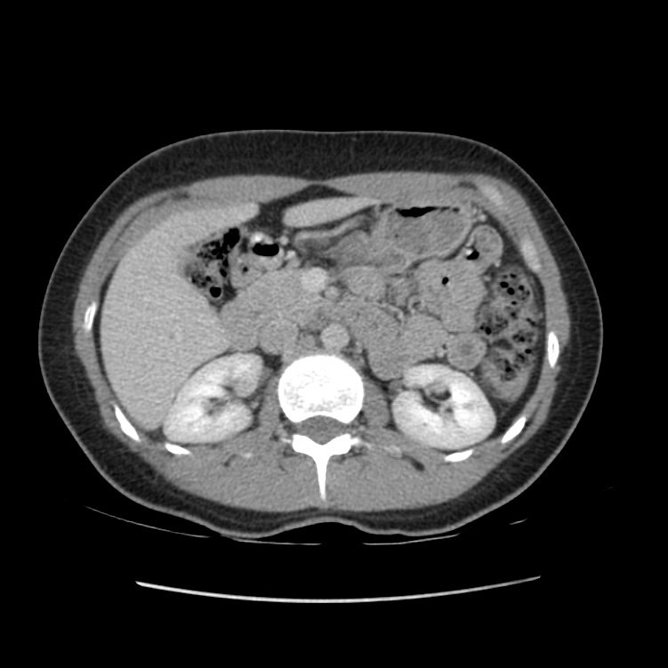
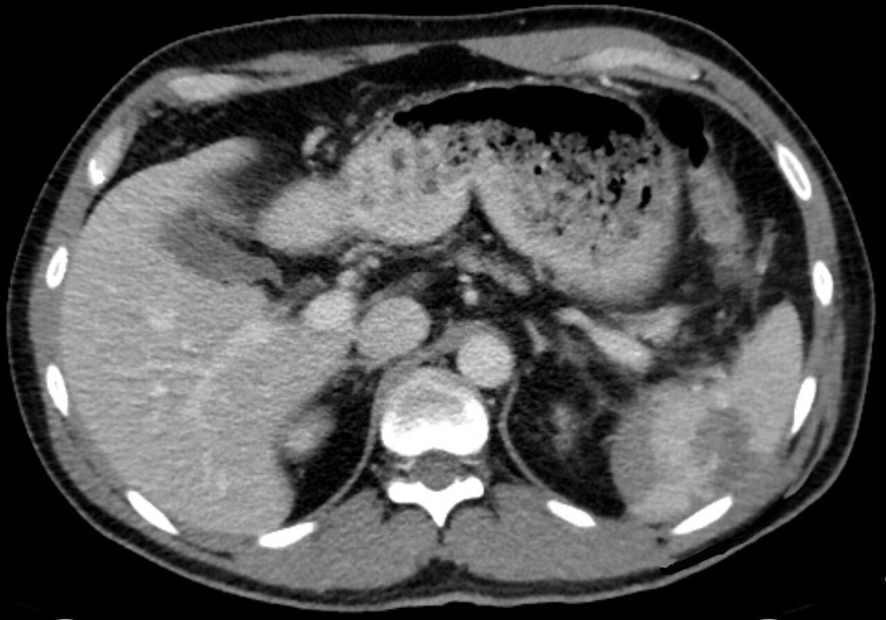

الطور الوريدي البابيPortal venous phase
الطور الروتيني لمفراس البطن بالصبغة، حين يصل تعزيز الكبد إلى أعلاه وتمتلئ الوريد البابي والأوردة الكبدية.
🎯 Purpose الغرض
الفحص الأساسي لأغلب حالات البطن: الآفات قليلة التروية (hypovascular) مثل النقائل الكبدية، والخراج، والالتهابات، وإصابات الأعضاء في الحوادث.
💉 Contrast الصبغة وطريقة إعطائها
صبغة يودية غير أيونية بالوريد بحاقن آلي، وغالباً صبغة أو ماء بالفم قبل الفحص لإظهار الأمعاء حسب البروتوكول.
📋 Patient preparation تحضير المريض
- صيام قصير قبل الفحص حسب بروتوكول المستشفى
- شرب الصبغة الفموية أو الماء قبل الفحص بالوقت المحدد (عند الطلب)
- فحص وظائف الكلى (eGFR) للمعرّضين للخطر
- السؤال عن حساسية الصبغة والميتفورمين
📸 Views / Positions الإسقاطات والوضعيات
- نحو 70–90 ثانية بعد بدء الحقن في وريد الذراع (أو 50–70 ثانية بعد تتبّع البلعة)
- مقاطع محورية من القبة الحجابية إلى الحوض مع إعادة بناء إكليلية وسهمية
🚫 Contraindications موانع الفحص
- حساسية شديدة سابقة للصبغة اليودية
- قصور كلوي شديد دون موازنة الفائدة
⚠️ Complications المضاعفات
- تفاعل تحسسي للصبغة
- تسرّب الصبغة (extravasation)
- إصابة كلوية بعد الصبغة (نادرة)
🖼️ Images · الصور

Traumatic splenic rupture (portal venous phase)تمزّق الطحال بعد الإصابة (الطور الوريدي البابي)🔴 Pathology · مرضي
🩺 الأعراض Symptoms
- Abdominal injuryإصابة البطن
- Left shoulder tip painألم في قمّة الكتف الأيسر
- Low blood pressure (shock)هبوط الضغط (صدمة دورانية)
⚠️ Red flags · متى تكون طارئة؟
- نزيف داخلي: طارئ.
🩻 ليش نصوّر؟ الطور الوريدي البابي يُظهر تمزّق الطحال والدم حوله.
للتعليم فقط — مو للتشخيص.